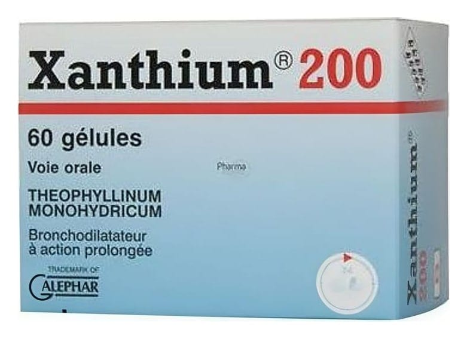

Xanthium 200 mg Mikropellet Kapsül, 60 Adet

Ne için kullanılır
KT · Bölüm 1• XANTHIUM etkin madde olarak her bir kapsülde 220 mg teofilin monohidrat içerir. • XANTHIUM ksantinler olarak adlandırılan ve solunum yolu ile ilgili hastalıkların tedavisinde kullanılan bir ilaç grubuna dahildir. • XANTHIUM 60 kapsül içeren ambalajlarda kullanıma sunulmaktadır. • XANTHIUM, astım, uzun süren bronş iltihabı, akciğerlerdeki hava yollarının aşırı genişlemesine bağlı bronş darlıklarında kullanılır.